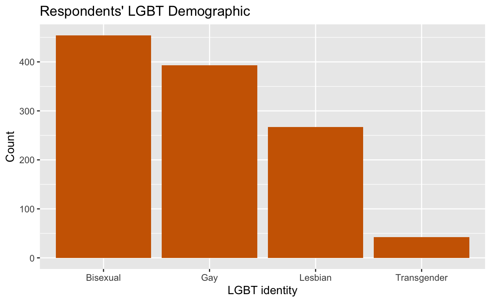
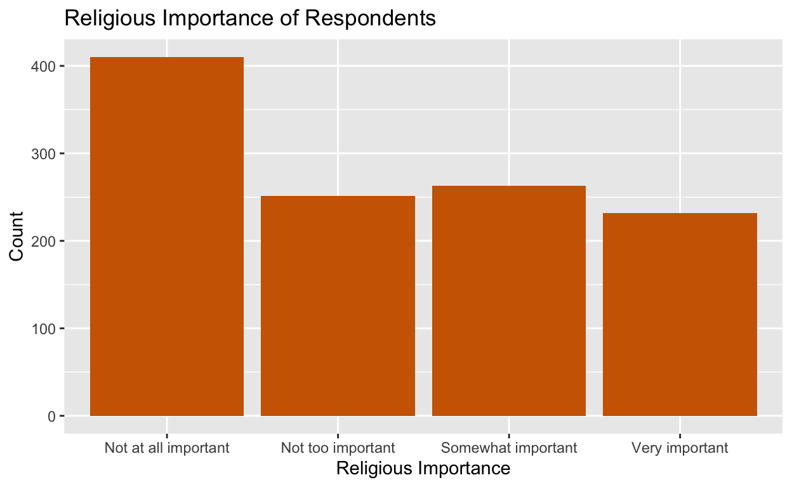
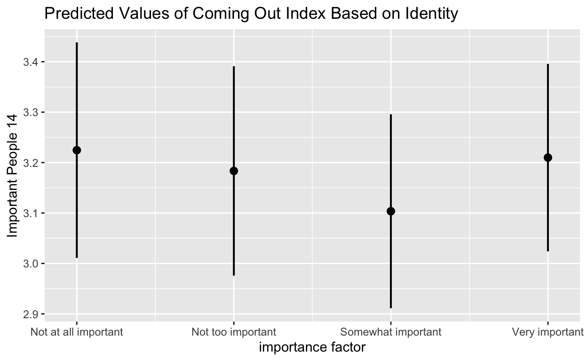

Introduction
This projects explores the relationship between religion and coming out rates among Lesbian, Gay, Bisexual, and/or Transgender (LGBT) individuals. “Coming out” is a concept detailing when queer individuals openly express their gender or sexual identity to the public. Historically, coming out has been a daunting and risky action, as the perception of LGBT individuals varied so greatly. Following the raid at the Stonewall Inn, the gay liberation movement began in the 1960s. Pioneers, like Marsha P. Johnson and Ellen DeGeneres, took brave leaps of coming out, in order to destigmitize the act for others. Today, we’ve progressed into an era where queer representation has flooded the media, and Obergefell v Hodges has been codified.
However, throughout this progress, one large opposition group to the LGBT community has been religious groups. Religious groups have utilized their own religious texts as a way to prove that being queer is not natural or safe. While social change has undoubtedly occurred, the liberation movement isn’t over. We see many horrific actions against the LGBT community committed in the name of religion, whether it be sending kids to conversion therapy or the Orlando nightclub shooting. On the other hand, religion has shown to be a unifying factor among religious, queer individuals looking to find other people with the same inter-sectional identities. We’ve also seen important figures, like former presidential candidate Pete Buttigeg, express that his strong faith works with his gay identity.
With all this background information, I attempted to figure out if being more religious made LGBT individuals more or less likely to come out, if it had any impact at all. This tied in with data surrounding a respondent’s personal experiences with religious conflict, as well as how important being LGBT was to them in relation. Finally, I looked at the perception surrounding different religions and their acceptance towards the LGBT community.
The results of this data would be useful to individuals advocating for the LGBT community today, as it could help narrow down which groups, if any, are seen to be less accepting. If religion, in fact, has a positive impact on coming out, then activists could investigate whether finding religion creates for a more smooth coming out process.
Data and research design
To answer this question, I used data from [Pew Research Center] (https://www.pewresearch.org/social-trends/dataset/2013-lgbt-survey/). The survey data was acquired in April 2013, with responses from 1,197 self-identifying LGBT members above the age of 18. The survey asked a multitude of questions, including demographics, political opinions, social perceptions, family background, and religious importance.
The research design is observational, as the explanatory variable (the importance of religion in the respondents’ life) is not forced onto the respondent as a “treatment.” Researchers, instead, observed a naturally assigned treatment, and I have attempted to find a correlation between the results.
The main variables in this data set that are used can be found below:
LGBTQ_importance: importance of LGBT identity, on a scale of 1-5
Important_people: index indicating what portion of important people in the respondents’ life they have come out to, on a scale of 1-4
Religion: religious identity; Protestant, Roman Catholic, Agnostic/Atheist, Nothing, Christian, Other
Religion_Importance: index indicating how important religion is to the respondent, on a scale of 1-4
Religious_Conflict: 1 if respondent believes there is conflict between their religion and LGBT identity
For demographic context, here is the distribution of LGBT respondents based on their identity.

The outcome variable is an index of whether the important people in the individual’s life are aware of their sexuality and/or gender identity. The variable is measured as =4 means almost all know, =3 means some of them, =2 means a few, and =1 means none. To summarize, the mean ranges from 1 to 4 (whole numbers) with a mean of 2.28 and a median of 4.

The explanatory variable of interest is the religious status of the respondent, meaning their degree of religiousness, and if applicable, their religion. This is measured with two variables.
First, we look at a respondent’s actual religion, which is important to know for later, when thinking about confounding bias. A majority of the respondents were either Protestant or practiced under no religion.
Second, the importance of religion is measured as =1 is very important, =2 is somewhat important, =3 is not too important, and =4 is not at all important. The mean of religious importance across respondents is 1.31, and the median is 2.

Results
Without regressing the data, the bivariate relationship between the importance of religion and openness in coming out can be seen below. Each bar represents the mean index at which respondents in each of the four strengths of religiousness responded to coming out. A mean of 0 would represent that all respondents of the specific religious strength came out to nobody important, while a mean of 4 would represent that all respondents of the specific religious strength came out to everybody important.
lgbt1 |>
drop_na(Religion_Importance14) |>
group_by(importance_factor) |>
summarize(Important_People14 = mean(Important_People14, na.rm = TRUE)) |>
ggplot(aes(x = importance_factor, y = Important_People14)) +
geom_col(fill = "darkolivegreen4") +
labs(x = "Importance of Religion",
y = "Mean Index of Coming out to Important People",
title = "Index of Coming Out Based on Importance of Religion")
The bivariate plot does not suggest that there is any strong relationship between religiousness and coming out, as the means are only fractionally different. However, the highest response to coming out is among not too and not at all religious individuals. The regression analysis can help uncover any significant relationships, if they exist.
The table below looks more generally at self-proclaimed religious vs non-religious respondents, and the proportion at which they have come out. To note, there are more LGBT individuals who responded that they are not religious. Among those individuals, most have come out to all/a majority of important people in their lives. Among religious LGBT respondents, most have also come out to all/a majority of important people in their lives, however a greater proportion say that they have come out to none of the important people in their life, relative to those who are not religious. There does not seem to be a huge impact of religiousness on coming out to important people in your life. Yet still, it’s interesting that these same respondents who have come out, still identified that all religion are generally unfriendly towards the LGBT, as highlighted in the next table.
| Religious | All or most of them | Some of them | Only a few of them | None of them |
|---|---|---|---|---|
| Important | 0.52 | 0.24 | 0.17 | 0.07 |
| Not Important | 0.59 | 0.18 | 0.17 | 0.06 |
When respondents were asked what they assumed numerous religions felt about supporting the LGBT community, they responded with the displayed results. It’s important to note that there may be some confounding bias in what respondents personally identify as, what religions they are frequently exposed to, or what specific interactions they’ve had with different religious groups. The data showcases that, on the scale of 1-3, where 3 is the most unfriendly, Muslims were perceived to be the least friendly to the LGBT community. The Jewish community was seen to be the most friendly with a score of 2.299. The difference in means between the Muslim and Jewish groups was 0.59, so the range isn’t very large. Another takeaway from this visualization is that all the means from the respondents on these religions shifted towards the unfriendly side of the spectrum. No religion was identified as friendly towards the LGBT community, let alone neutral.
| Evangelical_Mean | Catholic_Mean | Jewish_Mean | Muslim_Mean | Mormon_Mean | NonEvangelical_Mean |
|---|---|---|---|---|---|
| 2.756 | 2.791 | 2.299 | 2.889 | 2.845 | 2.238 |
Permutations
The estimated proportional difference between those who consider religion important versus those who don’t consider religion important is -0.014. This means that those who consider religion important came out, on average, at 0.014 units less than nonreligious people. The p-value for the test of the null hypothesis that there would be no difference in the proportion of coming out between religious and nonreligious individuals is 0.588. With a standard test level of 0.05, we cannot reject this null hypothesis, so we are not confident that there exists a definite relationship between religion and coming out. With failing to reject a null hypothesis, we risk a type II error, meaning we potentially missed out on a meaningful relationship. Compared to a type I error (false-positive), type II error is less dangerous and also unlikely considering this p-value fails tests levels of 0.05, 0.1, and 0.5. The 95% confidence interval for the bivariate model is (-0.0460, 0.0488), meaning 95% of repeated sample will have a regression estimated correlation for coming out and religious importance that lies within this interval.
Regression Results
The first regression model is a bivariate model, regressing the coming out index on religious importance. The second is a multivariate model which includes respondents’ specific religious identities, how important their LGBT identity is in their life, their specific identity, and if they have faced religious conflict.
| Model 1 | |
|---|---|
| Intercept | 3.345*** |
| (0.047) | |
| Not too important | −0.079 |
| (0.076) | |
| Somewhat important | −0.174* |
| (0.075) | |
| Very important | −0.082 |
| (0.078) | |
| Num.Obs. | 1160 |
| R2 | 0.005 |
| R2 Adj. | 0.002 |
| + p < 0.1, * p < 0.05, ** p < 0.01, *** p < 0.001 |
The bivariate model says that respondents who declared religion as not too important had an index score of coming out that was 0.079 lower than those who said religion was not at all important. For respondents who said religion was somewhat important, their coming out score was 0.174 lower that those who said religion was not at all important. Finally, for those who said religion was very important, their coming out score was 0.082 lower than someone who said religion was not at all important. The somewhat importance coefficient is the only one that has statistical significance with a test level of 0.05. The other coefficients had high p-values, meaning they were not significant. Using the R-squared score to predict in-sample fit, we can see the score of 0.5% exemplify that the variance of coming out cannot be explained by the variance of religious importance.
[why does somwhat important have signficance]
One way to justify why only the “somewhat important” score is significant is through an analysis of a likert scale. A likert scale could provide researchers with centrally-skewed data. For people who struggle with their religious identity or don’t think about it as much, “somewhat important” could be the safest option. This would also explain why “somewhat important” has the smallest predicted coming out score, as religion has a ambiguous effect in their lives.
| Model 1 | |
|---|---|
| Intercept | 3.050*** |
| (0.121) | |
| Not too important | −0.041 |
| (0.071) | |
| Somewhat important | −0.121 |
| (0.078) | |
| Very important | −0.015 |
| (0.083) | |
| Roman Catholic | −0.086 |
| (0.082) | |
| Agnostic/Atheist | 0.091 |
| (0.090) | |
| Nothing | 0.156* |
| (0.073) | |
| Christian | 0.177 |
| (0.203) | |
| Other | 0.169* |
| (0.078) | |
| LGBT: Very important | −0.065 |
| (0.082) | |
| LGBT: Somewhat Important | −0.193* |
| (0.080) | |
| LGBT: Not too important | −0.543*** |
| (0.086) | |
| LGBT: Not at all important | −0.873*** |
| (0.097) | |
| No Religious Conflict | 0.174** |
| (0.059) | |
| Gay | 0.624*** |
| (0.058) | |
| Lesbian | 0.712*** |
| (0.064) | |
| Transgender | −0.400** |
| (0.129) | |
| Num.Obs. | 1156 |
| R2 | 0.317 |
| R2 Adj. | 0.307 |
| + p < 0.1, * p < 0.05, ** p < 0.01, *** p < 0.001 |
The multivariate model suggests that, relative to those who said religion was not at all important, respondents who declared religion as not too important had an index score of coming out that was 0.041 lower, somewhat important was 0.121 lower, and very important was 0.015 lower, holding all other variables constant. However, the somewhat important coefficient because less statistically significant, as it only passed a test level of 0.1.
Therefore, since there is not statistical significance, we can say that religion does not have a casual impact on coming out. The null hypothesis stays in effect.
It’s interesting to note that the coefficients from respondents who said their LGBT identity was somewhat, not too, or not at all important were significant, holding all other variables constant. In general, the specific identity a respondent identified with also had a statistically significant impact on their coming out index. This would be something I could investigate further in another experiment, which I further discuss in the conclusion.
The multivariate regression’s lack of statistical significance is highlighted even more in the visual below, where the average predicted values of all the religious importance groups lie between 3.1 and 3.25– a very small range.

Casuality and confounders
Since no correlation was found between religious importance and coming out rates, we cannot find causality between the variables.
There are definitely confounders that could possibly interfere with the coming out index. In the multivariate model, I attempted to control the role identifying with different religions would play, due to the variations in friendliness calculated earlier. I also controlled for the importance being LGBT has on a respondents’ life, because some may have found coming out more important/necessary to them than others. I controlled for any conflict that religion played in a respondent’s life, in case there was significant trauma in their relationship with religion that swayed their decision. Finally, I controlled for specific LGBT identities, in case, for example, transgender people had a harder time coming out (or maybe an easier time) because of more drastic effects of their transition.
While these were the confounders available in my dataset, there are others that could be considered. For example, a respondent’s local origin could play a role in how supportive an environment would be to coming out. Someone from a left-leaning urban area, where exposure to LGBT communities is high would likely feel more comfortable coming out, in comparison to someone who resided in an area with low exposure to LGBT communities.
Additionally, it would be helpful to know the reaction of the important individuals who respondents came out to. This would allow us to see whether one early negative reaction dissuaded a respondent from coming out to any other figures in their life.
Conclusion and Next Steps
Both the bivariate and multivariate regression results detail that there is no statistically significant correlation between someone’s religious importance and the amount of people they’ve come out to. In the multivariate regression, there was shown to be significance between how important being LGBT is to a respondent, as well as what specific identity respondents identify with in the community. This conclusion could show that we’ve progressed into an era of the gay liberation movement where religious groups are becoming more accepting, and play less of a disheartening role in LGBT communities. It could also be explained by the fact that the LGBT community has progressed very far in its advocacy, making people from all backgrounds take risks in coming out more frequently
The lack of correlation between religion and coming out could also be justified with a few of the data limitations. For starters, we don’t have data on the reactions that respondents dealt with after coming out to however many people they came out to. We also don’t know they religious background of the people they came out to. In a future experiment, it would be interesting to see if coming out to more religious individuals led to a positive or negative reaction. This could help answer the research question in a unique perspective: how does religion influence people’s reaction to LGBT individuals?
Since the multivariate regression found a significant correlation between LGBT importance and LGBT identities, a potential next step would be to look into that relationship with coming out. Below, I created bivariate distributions between LGBT identities and coming out, and LGBT importance and coming out. A future project could investigate why bisexual and transgender respondents come out at lower rates. Another project could look at why some respondents view being LGBT as less important in their lives than others.
